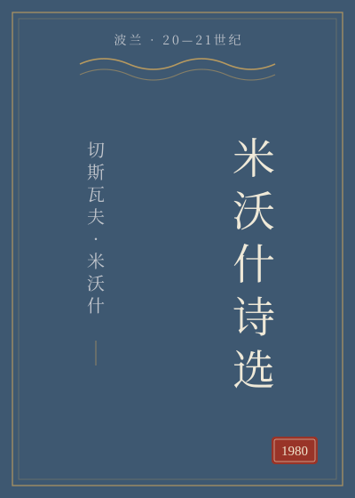
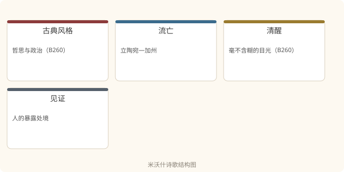

米沃什诗选
一、基本信息
| 作者 | 切斯瓦夫·米沃什 |
|---|---|
| 成书/出版 | 诗作于1930年代以来；通行选本数十首 Czeslaw Milosz — Encyclopaedia Britannica（百科全书） |
| 国别/地区 | 波兰 |
| 时代 | 现当代 · 20—21世纪 |
| 体裁 | 诗选集 |
| 语言 | 波兰语 |

米沃什诗歌结构图（主题·结构图）
二、创作背景
作者页（B260）：米沃什诗'noted for their classical style and their preoccupation with philosophical and political issues'（古典风格、专注哲学与政治议题——B260）；1980年诺奖授奖词——'a writer who with uncompromising clear-sightedness voices man's exposed condition in a world of severe conflicts'。
三、内容脉络
立陶宛-波兰-加州的三重地理：《科尔波特？》——不：'Columbia'？（篇目通说待核）
四、主要人物表
| 人物 | 身份 | 说明 |
|---|---|---|
| 见证者 | 诗人 | 'uncompromising clear-sightedness'（B260） |
五、主题与艺术特点
- 古典风格与哲思政治（B260）。
- '人的暴露处境'（B260 授奖词）。
- 流亡与故土的双重时间（通说）。
六、影响与评论
- Britannica：1980年诺奖授奖词（B260）。
Czeslaw Milosz — Encyclopaedia Britannica（百科全书） - Britannica：'His poetic works are noted for their classical style'（B260）。
Czeslaw Milosz — Encyclopaedia Britannica（百科全书）
七、阅读建议
难点
- 波兰历史语境。
- 哲思的密度。
- 《米沃什诗选》（人民文学出版社，通说待核）。
先《被禁锢的头脑》后诗选。
八、待核实
- 篇目核对。
- 1980年诺奖授奖词原文（B260 已载）展开核对。
- 《诗的艺术？》待核。
本页主要来源
切斯瓦夫·米沃什的其他收录作品：被禁锢的头脑